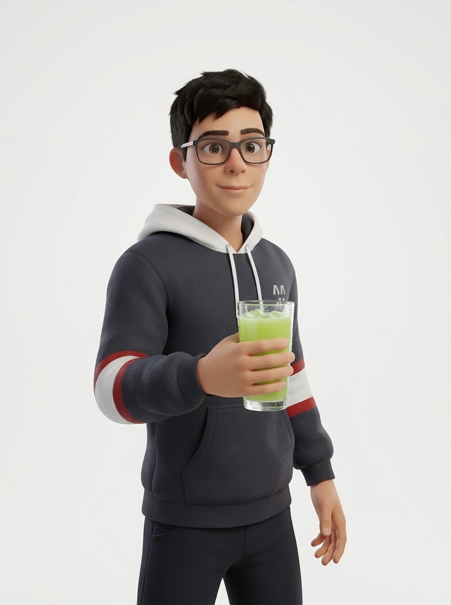
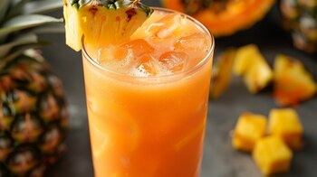
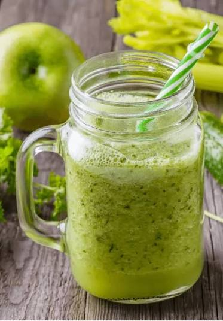
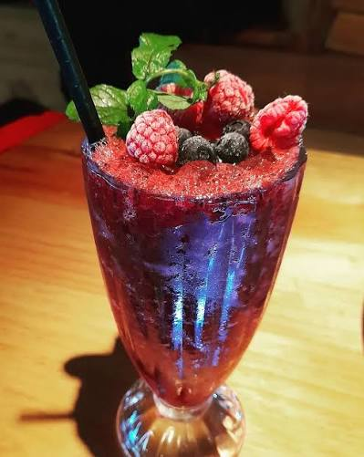
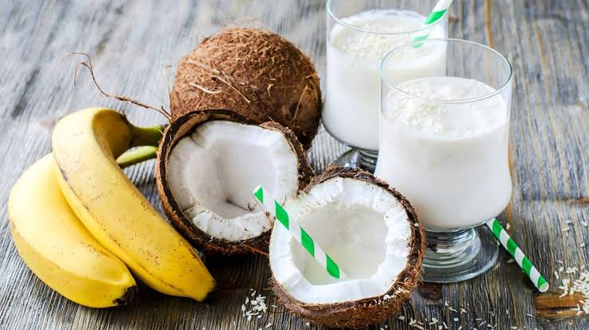
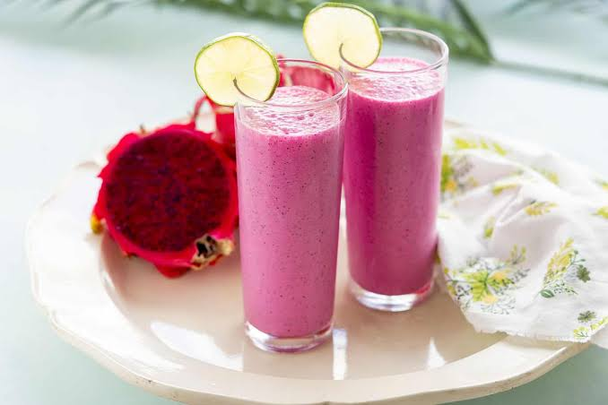
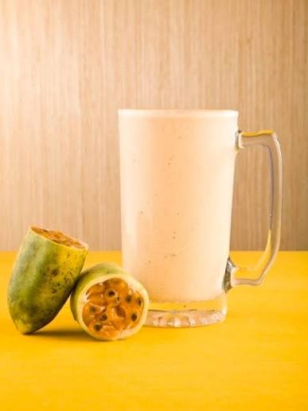

Jugo Verde Energía
Deliciosa mezcla revitalizante de espinaca, manzana verde, piña y un toque de jengibre.
Descubre el poder de la naturaleza con nuestros jugos verdes preparados al instante con ingredientes seleccionados para tu bienestar diario.
Explorar Menú
Deliciosa mezcla revitalizante de espinaca, manzana verde, piña y un toque de jengibre.

Combinación refrescante de pepino, apio, limón y piña fresca de temporada.

Una mezcla balanceada de kale, perejil, manzana verde y agua de coco.

Elige tus frutas y verduras favoritas para crear la combinación perfecta a tu gusto.
Utilizamos vegetación y frutas 100% frescas, libres de conservantes o azúcares añadidos.
Una amplia variedad de recetas pensadas para adaptarse a diferentes gustos y preferencias.
Bebidas listas para consumir en cualquier momento, ideales para tu ritmo de vida diario.
Adapta las porciones e ingredientes según tus necesidades e ingredientes favoritos.


